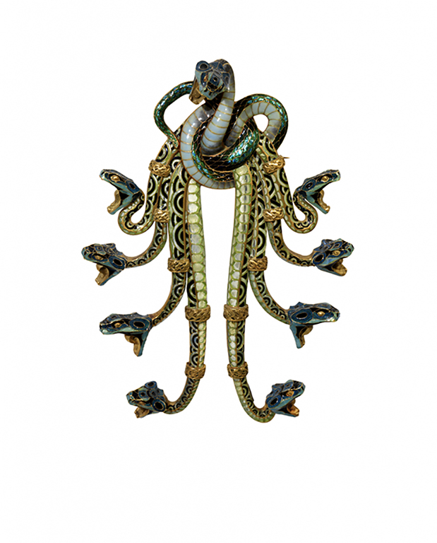
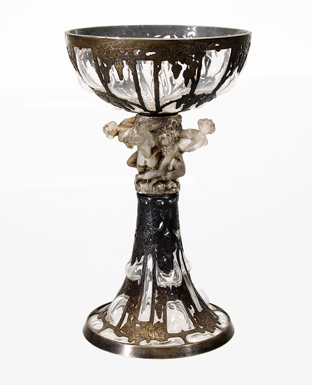
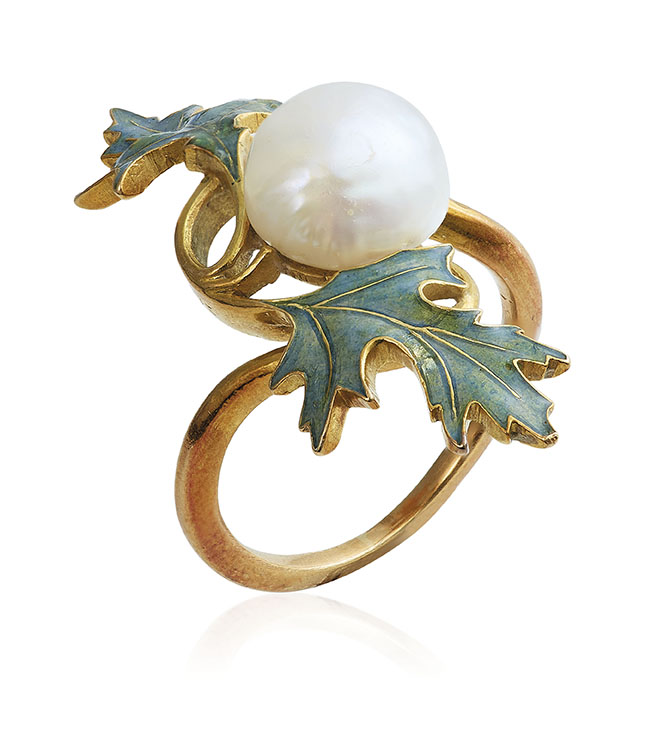
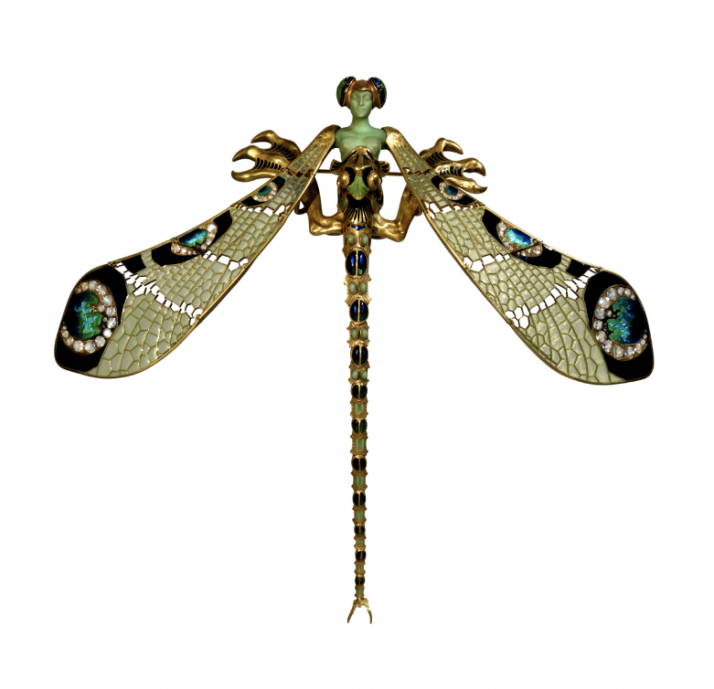
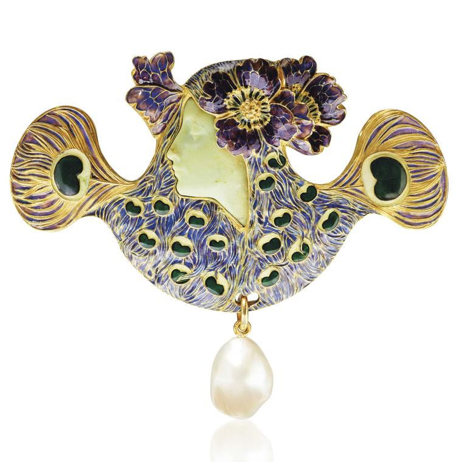
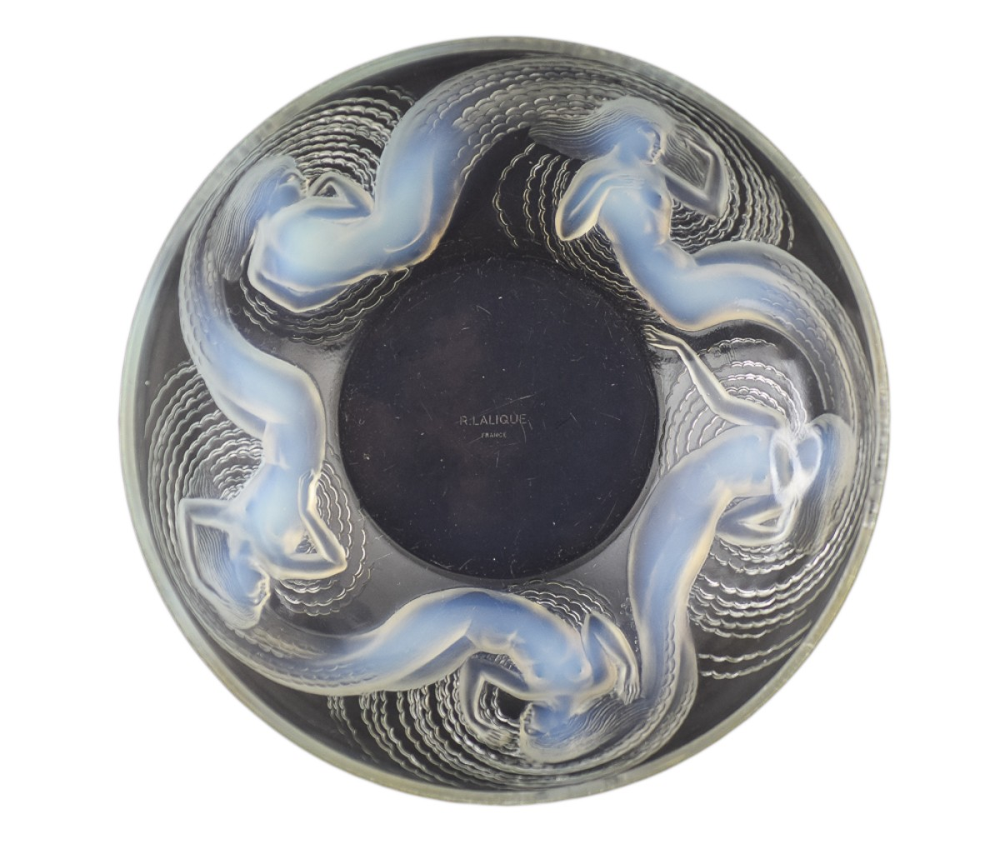

Peitoral “Serpentes”_21cm x14,3cm

Chalice with vine motifs and figures_21cm x 12cm

Pearl and enamel rin_tamanho 5
Aspetos importantes da vida de René Lalique
René nasceu a 6 de abril de 1860 e faleceu em 1 de maio de 1945 e durante este período teve uma vida prospera onde criou muitas obras:
Com 16 anos Lalique começa a estudar joalharia parisiense, e em 1878 até 1880 ingressou na Sydenham Art College;
Em 1880 regressa a frança e começa a trabalhar nas empresas Aucoq, Cartier e Boucheron;
No ano de 1882 começa a fazer desenho independente para muitas casas de joias em Paris, em 1886 abre a sua própria joalharia;
Ganha o titulo de desenhador de jóias Art Nouveau mais importante foi lhe atribuido em 1890;
Mais tarde René Lalique construiu uma fábrica em Wingen-sur-Moder para produzir em grandes quantidades,para que todos tivessem acesso a sua arte.
Características Arte Nova
Este estilo artístico estendeu-se para o design, a pintura, a escultura, a música, a arquitectura, a literatura e ainda a joalharia tendo como principais características :
Formas orgânicas;
Representação feminina;
Ausência de formas rectas;
Muitas vezes poético/teatral;
Tema floral sempre ligado a natureza.
Exemplos de obras
Exemplos de jóias arte nova, onde se podem ver as características do tópico anterior.



Video
Video sobre René Lalique e suas obras.
Outras Obras
Nome da obra
Ano
Material
Pendente "Rosto Feminino"
1897
Marfim, ouro esmaltado a azul esverdeado, diamantes e safiras